Nginx 使用教程

本章学习如何在 CentOS 7下使用 Nginx 来搭建反向代理和配置动静分离以及负载均衡过程的步骤。
Nginx 基本概念
Nginx简介
Nginx是以一个高性能的HTTP和反向代理服务器，特点是内存占用小，并发能力强，事实上Nginx的并发能力确实在同类型的网页服务器中表现良好。Nginx专为性能优化而开发，性能是其最重要的考量，实现上非常注重效率，能够经受高负载的考验，有报告表明它能支持高达50000个并发连接数。
反向代理
在介绍反向代理之前，我们先介绍一下正向代理。正向代理是一个位于客户端和目标服务器之间的代理服务器(中间服务器)。为了从原始服务器取得内容，客户端向代理服务器发送一个请求，并且指定目标服务器，之后代理向目标服务器转交并且将获得的内容返回给客户端。正向代理的情况下客户端必须要进行一些特别的设置才能使用。正向代理实际上代理的是用户。
反向代理正好相反。对于客户端来说，反向代理就好像目标服务器。并且客户端不需要进行任何设置。客户端向反向代理发送请求，接着反向代理判断请求走向何处，并将请求转交给客户端，使得这些内容就好似他自己一样，一次客户端并不会感知到反向代理后面的服务，也因此不需要客户端做任何设置，只需要把反向代理服务器当成真正的服务器就好了。
负载均衡
在因特网中，用户对服务器的访问并发量是很高的，通常单个服务器不可能完成对用户的响应。此时我们可以增加服务器的数量，然后将请求分发到各个服务器上，将原来请求集中到单个服务器上的情况改为将请求分发到多个服务器上，将负载分发到不同的服务器上，这也就是通常所说的负载均衡。
动静分离
动静分离是指在web服务器架构中，将静态页面与动态页面或者静态内容接口和动态内容接口分开不同系统访问的架构设计方法，进而提升整个服务访问性能和可维护性。
Nginx基本使用
Nginx安装
安装Nginx需要先安装该软件的依赖：pcre，openssl，zlib，最后安装Nginx。可通过如下命令安装：
1 | yum -y install gcc zlib zlib-devel pcre-devel openssl openssl-devel |
接下来安装Nginx。首先下载nginx的源码包：
1 | wget http://nginx.org/download/nginx-1.16.2.tar.gz |
接下来，解压配置编译安装就行：
1 | tar -zxvf nginx-1.16.2.tar.gz |
至此，Nginx安装成功，转到/usr/local/nginx/sbin目录下，查看版本号：
1 | ./nginx -v |
Nginx常用命令
启动Nginx：
./nginx如果没有修改Nginx的配置文件，我们现在就可以在内网中通过访问该服务器的地址获得Nginx的主页，如果没有看到Nginx的主页，此时需要配置防火墙开放80端口。
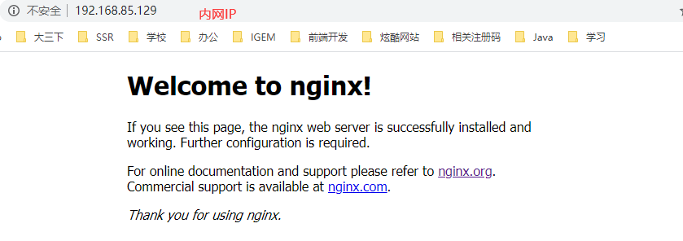1581928110804- 查看开放的端口：
firewall-cmd --list-all - 设置开放的端口：
firewall-cmd --add-port=80/tcp --permanent - 设置开放的服务：
firewall-cmd --add-service=http --permanent - 设置之后重启防火墙：
firewall-cmd --reload
- 查看开放的端口：
停止Nginx：
./nginx -s stop重加载Nginx：
./nginx -s reload
Nginx配置文件
配置文件位于/usr/local/nginx/conf/nginx.conf，配置文件可以划分为三个部分：
全局块：配置服务器整体运行的配置指令
从配置文件开始到events块之间的内容，主要会设置一些影响 nginx 服务器整体运行的配置指令，主要包括配置运行 Nginx 服务器的用户（组）、允许生成的 worker process 数，进程 PID 存放路径、日志存放路径和类型以及配置文件的引入等。
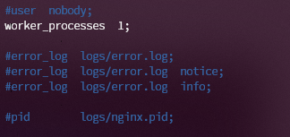1581927474071上面的第一行配置的就是worker进程的数目，进程数目越大，相应的并发能力也就也强，通常将它的值设置为CPU的核数目。
events块：影响 Nginx 服务器与用户的网络连接
events 块涉及的指令主要影响 Nginx 服务器与用户的网络连接，常用的设置包括是否开启对多 worker进程下的网络连接进行序列化，是否允许同时接收多个网络连接，选取哪种事件驱动模型来处理连接请求，每个 worker进程可以同时支持的最大连接数等。
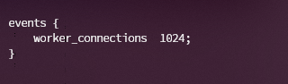1581927674793上面的例子表示的是一个worker进程支持的最大连接数。
http块
这算是 Nginx 服务器配置中最频繁的部分，代理、缓存和日志定义等绝大多数功能和第三方模块的配置都在这里。需要注意的是http块也可以进一步划分为http全局块核server块。
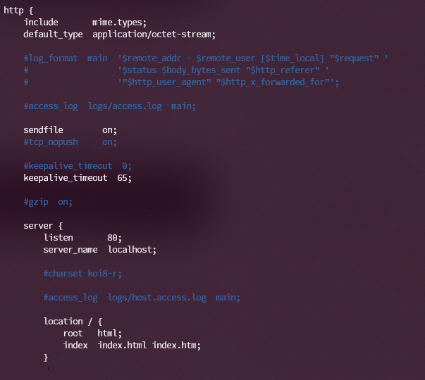1581927895940- http全局块：http 全局块配置的指令包括文件引入、MIME-TYPE 定义、日志自定义、连接超时时间、单链接请求数上限等。
- server块：这块和虚拟主机有密切关系，虚拟主机从用户角度看，和一台独立的硬件主机是完全一样的，该技术的产生是为了节省互联网服务器硬件成本。每个 http 块可以包括多个 server 块，而每个 server 块就相当于一个虚拟主机。而每个 server 块也分为全局 server 块，以及可以同时包含多个 locaton 块。
- 全局server块：最常见的配置是本虚拟机主机的监听配置和本虚拟主机的名称或 IP 配置。
- location块：一个 server 块可以配置多个 location 块。这块的主要作用是基于 Nginx 服务器接收到的请求字符串（例如 server_name/uri-string），对虚拟主机名称（也可以是 IP 别名）之外的字符串（例如 前面的 /uri-string）进行匹配，对特定的请求进行处理。地址定向、数据缓存和应答控制等功能，还有许多第三方模块的配置也在这里进行。
Nginx配置实例
反向代理 1
实现效果：打开浏览器，在浏览器地址栏输入地址
server.test.com，跳转到 liunx 系统 tomcat 主页面中。
准备工作
在CentOS中安装tomcat，使用默认的端口8080启动服务，即进入tomcat的bin目录中，运行
./startup.sh启动tomcat服务器修改防火墙，使其对外开放8080端口：
1
2firewall-cmd --add-port=8080/tcp --permanent
firewall-cmd --reload在windows中通过浏览器
ip:8080访问tomcat服务器
具体配置
打开windows的host文件，添加
192.168.85.129 server.test.com。在nginx进行请求转发的配置
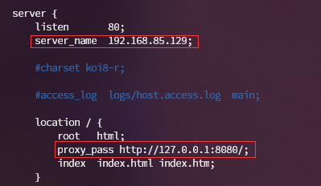1581939678141接着重启以下nginx：
./nginx -s reload。然后在浏览器中输入server.test.com，就可以得到tomcat的网页：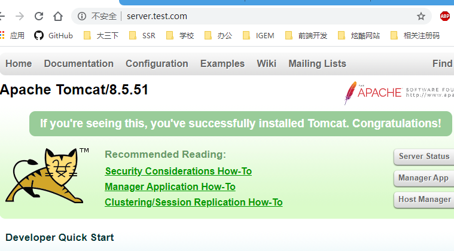
反向代理2
实现效果：使用nginx反向代理，根据访问的路径跳转到不同端口的服务中，nginx监听端口9001，当访问
ip:9001/edu直接跳转到127.0.0.1:8080，当访问ip:9001/vod，直接跳转到127.0.0.1:8081。准备工作
- 准备两个tomcat服务器，一个配置在8080端口，一个配置在8081端口。修改conf/server.xml里面的两个端口，使得两个tomcat能够同时运行起来。
- 创建文件夹和测试文件。创建的文件夹和文件等会在被解析的时候用到。
具体配置
找到nginx配置文件，进行反向代理配置：
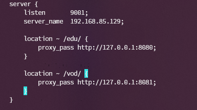1581940620095防火墙对外开放9001，8080和8081端口。
测试如下：
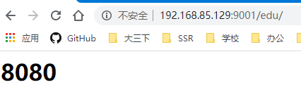1581943507419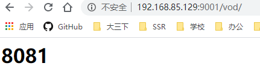1581943526797
负载均衡
实现效果：浏览器地址栏输入地址
ip:9002/edu/，使得后台的服务器均匀负载，将请求平均分发到8080和8081端口的服务器上。准备工作
- 准备两台服务器，一台8080，另外一台8081
- 在两台tomcat服务器的webapps目录，创建edu文件夹，同时在edu文件里面创建index.html
具体配置
找到nginx配置文件，进行负载均衡的配置
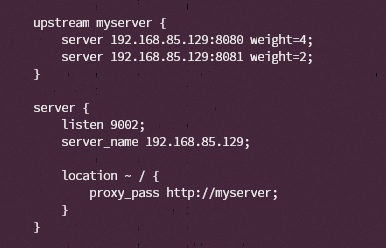1581944619600防火墙开放9002端口。
测试如下：
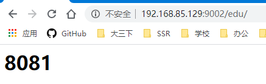1581944727364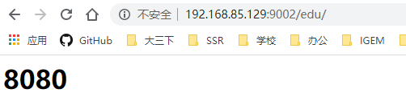
Nginx分配服务器策略
轮询（默认）：每个请求按时间顺序逐一分配到不同的后端服务器，如果后端服务器 down 掉，能自动剔除。
权重（weight）：weight 代表权重默认为 1,权重越高被分配的客户端越多。
img
ip_hash：每个请求按访问 ip 的 hash 结果分配，这样每个访客固定访问一个后端服务器。
img
fair：按后端服务器的响应时间来分配请求，响应时间短的优先分配。
img
动静分离
动静分离：Nginx 动静分离简单来说就是把动态跟静态请求分开，不能理解成只是单纯的把动态页面和静态页面物理分离。严格意义上说应该是动态请求跟静态请求分开，可以理解成使用 Nginx处理静态页面，Tomcat 处理动态页面。动静分离从目前实现角度来讲大致分为两种，一种是纯粹把静态文件独立成单独的域名，放在独立的服务器上，也是目前主流推崇的方案；另外一种方法就是动态跟静态文件混合在一起发布，通过 nginx 来分开。通过 location 指定不同的后缀名实现不同的请求转发。通过 expires 参数设置，可以使浏览器缓存过期时间，减少与服务器之前的请求和流量。具体 Expires 定义：是给一个资源设定一个过期时间，也就是说无需去服务端验证，直接通过浏览器自身确认是否过期即可，所以不会产生额外的流量。此种方法非常适合不经常变动的资源。（如果经常更新的文件，不建议使用 Expires 来缓存），我这里设置 3d，表示在这 3 天之内访问这个 URL，发送一个请求，比对服务器该文件最后更新时间没有变化，则不会从服务器抓取，返回状态码 304，如果有修改，则直接从服务器重新下载，返回状态码 200。
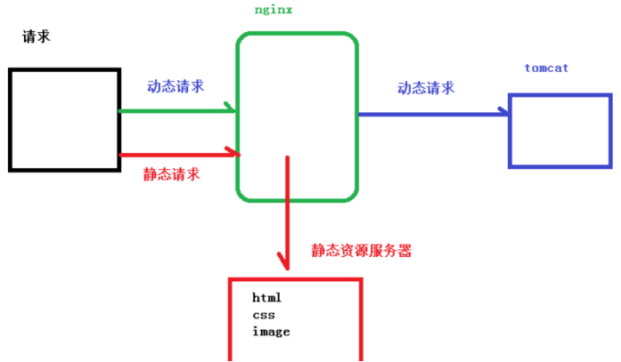img准备工作：在CentOS中，创建/static/www，/static/image文件夹，接着放入静态文件。
Nginx配置：
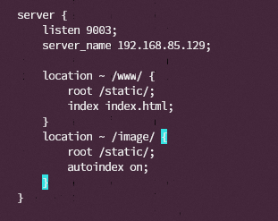1581946029645autoindex能够为目录下的文件自动创建索引。效果：
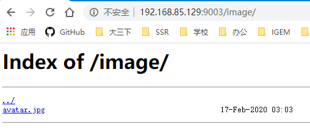1581946053128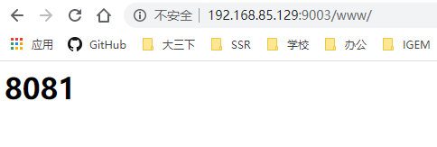1581946068998
高可用集群
下面将使用keepalived实现服务器的高可用性。详细的讲解见Nginx原理一节。
两台Nginx服务器
准备两台服务器，在此地址是
192.168.85.129和192.168.85.130。然后再在两台服务器上安装Nginx软件。keepalived软件
使用以下命令：
1
yum install keepalived -y
安装完成后，可以在/etc/keepalived中找到配置文件。
完成高可用的配置
修改/etc/keepalived/keepalived.conf
1
2
3
4
5
6
7
8
9
10
11
12
13
14
15
16
17
18
19
20
21
22
23
24
25
26! Configuration File for keepalived
global_defs {
router_id LVS_DEVEL
}
vrrp_script chk_http_port {
script "/usr/local/src/nginx_check.sh"
interval 2
weight 2
}
vrrp_instance VI_1 {
state BACKUP
interface ens33
virtual_router_id 51
priority 90
advert_int 1
authentication {
auth_type PASS
auth_pass 1111
}
track_script {
chk_http_port
}
virtual_ipaddress {
192.168.85.120
}
}在/usr/local/src/中添加nginx_check.sh文件
1
2
3
4
5
6
7
8
9
A=`ps -C nginx --no-header | wc -l`
if [ $A -eq 0 ];then
/usr/local/nginx/sbin/nginx
sleep 2
if [`ps -C nginx --no-header | wc -l` -eq 0];then
killall keepalived
fi
fi
测试
启动nginx：
./nginx启动keepalived：
systemctl start keepalived.service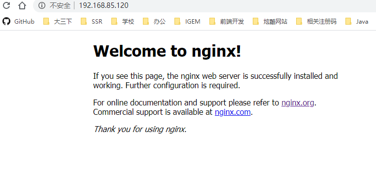1581993867642关闭主服务器上的nginx，再次访问虚拟地址
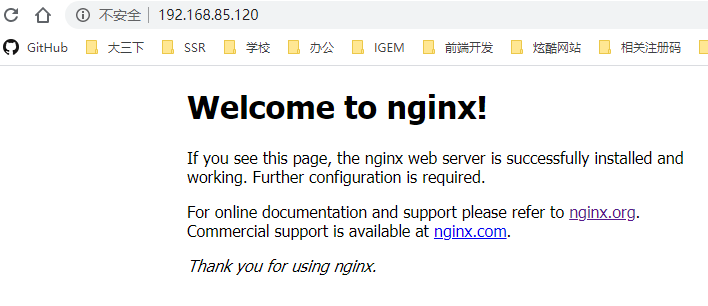1581993920791
Nginx原理
Nginx在启动时会以daemon形式在后台运行，采用多进程+异步非阻塞IO事件模型来处理各种连接请求。多进程模型包括一个master进程，多个worker进程，一般worker进程个数是根据服务器CPU核数来决定的。master进程负责管理Nginx本身和其他worker进程。
Master进程作用是读取并验证配置文件nginx.conf，管理worker进程；每一个Worker进程都维护一个线程（避免线程切换），处理连接和请求；注意Worker进程的个数由配置文件决定，一般和CPU个数相关（有利于进程切换），配置几个就有几个Worker进程。
Nginx热部署的方式：修改配置文件nginx.conf后，重新生成新的worker进程，当然会以新的配置进行处理请求，而且新的请求必须都交给新的worker进程，至于老的worker进程，等把那些以前的请求处理完毕后，kill掉即可。
Nginx的高并发：Nginx采用了Linux的epoll模型，epoll模型基于事件驱动机制，它可以监控多个事件是否准备完毕，如果OK，那么放入epoll队列中，这个过程是异步的。worker只需要从epoll队列循环处理即可。
Nginx的高可用性：Keepalived是一个高可用解决方案，主要是用来防止服务器单点发生故障，可以通过和Nginx配合来实现Web服务的高可用（其实，Keepalived不仅仅可以和Nginx配合，还可以和很多其他服务配合）。Keepalived+Nginx实现高可用的思路：第一：请求不要直接打到Nginx上，应该先通过Keepalived（这就是所谓虚拟IP，VIP）第二：Keepalived应该能监控Nginx的生命状态（提供一个用户自定义的脚本，定期检查Nginx进程状态，进行权重变化,，从而实现Nginx故障切换）